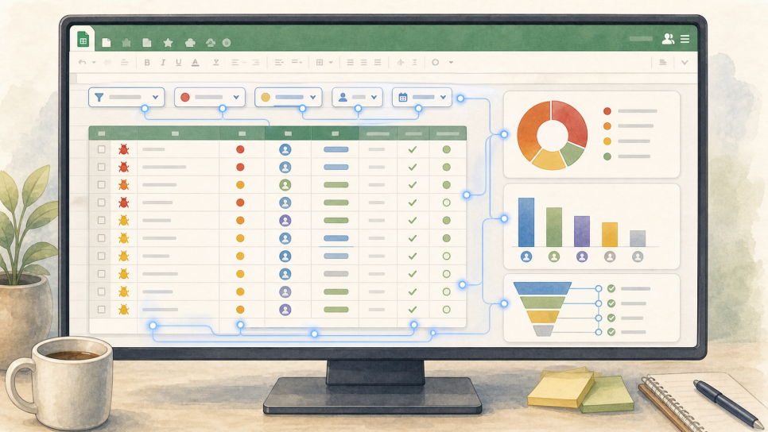
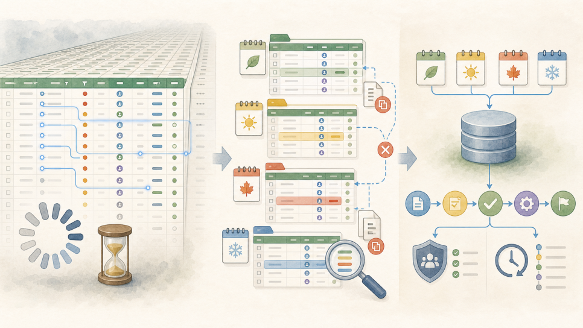

ALEXSOFT INSIGHTS
엑셀과 구글 스프레드시트로 관리하던 업무, 언제 별도 시스템이 필요할까?
엑셀과 구글 스프레드시트를 계속 사용할 때와 별도 업무 시스템으로 전환할 때를 구분하는 판단 기준을 설명한 글.

지난 글에서는 업무를 자동화한다고 해서 반드시 새로운 프로그램부터 만들 필요는 없다는 이야기를 했습니다.
이미 잘 사용하고 있는 엑셀이나 구글 스프레드시트가 있다면 그대로 두고, 사람이 반복해서 옮기고 정리하는 부분만 자동화하는 편이 더 나을 수 있습니다. 그렇다면 반대의 질문도 생깁니다.
언제까지 엑셀이나 구글 스프레드시트를 사용해도 되고, 언제부터 별도 업무 시스템을 만들어야 할까?
예전에는 사용자 수나 데이터 건수를 기준으로 판단하는 경우가 많았습니다. 사람이 늘어나고 파일이 커지면 시스템을 만들어야 한다는 식으로 말이죠. 지금은 그렇게 단순하게 판단하기 어렵습니다.
클라우드 기반의 동시편집이 보편화됐고, 간단한 자동화 기능도 쉽게 사용할 수 있습니다. 최근에는 AI가 수식과 자동화 스크립트를 만들고 데이터까지 분석해 줍니다. 몇 년 전이라면 간단한 프로그램을 만들었을 업무도 이제는 엑셀이나 구글 스프레드시트 안에서 꽤 오래 버틸만합니다.
결국 판단 기준은 현재 업무가 시트로 감당할 수 있는 범위를 넘어섰는지를 봐야 합니다.
엑셀과 구글 스프레드시트는 생각보다 강력하다.
엑셀과 구글 스프레드시트는 매우 훌륭한 업무도구입니다.
별도의 개발 과정 없이 바로 표를 만들 수 있고, 업무가 바뀌면 열을 추가하거나 수식을 수정하면 됩니다. 필터와 통계를 만들기도 쉽고, 여러 사람이 동시에 입력하고 확인하기도 편리합니다.
업무 구조가 단순하고, 관리할 데이터의 기준이 명확하다면 별도 시스템보다 시트가 더 빠르고 훨씬 유연한 해결책입니다.
제가 경험했던 오류관리 업무도 그랬습니다.
팀이 매일 확인하는 구글 스프레드시트가 이미 있었고, 오류의 등록과 처리 상태도 그 안에서 충분히 관리할 수 있었습니다. 여기에 처리흐름과 위험도, 각 담당자별 결함점수 등 다양한 통계와 필터, 안내 기능을 추가하는 것에는 복잡한 함수와 수식, 스크립트 등의 작성이 필요한데 AI 에게 지시하여 모두 자동화할 수 있었습니다.
그리고, 그것만으로 필요한 업무를 충분히 처리할 수 있었습니다. 업무 담당자들은 새로운 프로그램을 배울 필요가 없었고, 최신 자료가 어디에 있는지 다시 찾을 필요도 없었습니다.
이러한 상황에서 새로운 오류관리 프로그램을 만드는 것은 문제를 해결하는 일이 아니라 오히려 사용할 도구와 관리 책임만 늘리는 일이 될 수 있습니다. 문제는 시트를 사용한다는 사실이 아닙니다.
시트로 감당하기 어려워진 업무를 계속 시트에 붙잡아 두는 것이 문제입니다.
AI가 시트의 수명을 더 길게 만든다.
최근에는 AI가 시트로 처리할 수 있는 업무의 범위를 훨씬 더 넓혀주고 있습니다.
필요한 작업을 설명하면 수식을 만들어 주고, 기존 수식이 무슨 일을 하는지도 설명해 줍니다. 데이터를 유형별로 분류하거나 요약하고, 누락된 값과 이상한 값을 찾는 데도 사용할 수 있습니다.
반복 작업에 필요한 스크립도 AI에게 작성하게 할 수도 있습니다.
고객 문의를 내용에 따라 분류하거나, 매주 변경된 내용을 보고서 형태로 정리하거나, 여러 파일의 데이터를 하나의 시트로 모으는 정도의 작업은 별도 업무시스템 없이 처리할 수 있습니다.
과거에는 개발자나 숙련된 사용자만 시도할 수 있었던 자동화에 일반 업무 담당자도 쉽게 접근할 수 있게 된 것입니다.
그래서 반복 업무가 있다는 이유만으로 바로 프로그램을 개발해야 할 필요는 더 줄어들었습니다.
다만 AI가 만들어준 수식과 스크립트에는 검증은 필요합니다. AI가 코드를 작성해 줬다고 코드의 운영 책임까지 사라진 것은 아닙니다.
데이터 형식이 달라지거나 새로운 예외 사항이 들어오면 잘못된 결과를 만들 수 있습니다. 특히 금액, 계약, 정산처럼 오류가 실제 손실로 연결되는 업무라면 결과를 확인하고 문제가 발생했을 때 복구할 방법도 준비해야 합니다.
시트 안에서 수식과 스크립트, 외부 서비스 연결이 계속 늘어나면 어느 순간 그 시트 자체가 작은 프로그램처럼 변합니다.
프로그램처럼 동작하지만 전체 구조를 이해하고 관리할 사람이 없다면, 단순한 시트 자동화를 넘어 관리되지 않는 업무시스템이 된 것입니다.
행 수만 기준은 아니지만, 무시해서도 안 된다.
엑셀은 한 시트에 100만 행이 넘는 데이터를 담을 수 있고, 구글 스프레드시트도 파일 하나에 최대 1,000만 셀을 저장할 수 있습니다.
하지만 이것은 기술적인 최대치입니다.
파일에 데이터를 저장할 수 있다는 것과 여러 사람이 매일 쾌적하게 사용할 수 있다는 것은 다른 문제입니다.
단순한 값으로 구성된 10만행의 데이터를 엑셀에서 열고 분석하는 일은 가능합니다.
반면 같은 10만 행이라도 여러 열에 수식이 들어 있고, 다른 시트의 데이터를 참조하고, 여러 사람이 동시에 수정한다면 속도 문제는 훨씬 일찍 나타납니다.
구글 스프레드시트는 10만 행에 열이 50개만 있어도 500만 셀이 됩니다. 여기에 여러 시트와 수식, 가져오기 기능이 추가되면 정렬과 필터, 계산을 할 때마다 기다리는 시간이 꽤 길어집니다.
특히 성능 문제를 피하려고 월별이나 연도별로 파일을 계속 나누고 있다면 현재 도구가 업무량을 감당하지 못하고 있다는 신호입니다.
파일을 나누면 당장의 속도는 나아질 수 있지만, 어느 파일이 최신인지 확인하기 어려워지고 전체 기간의 통계를 만들기도 힘들어집니다. 같은 정보가 여러 파일에 중복되면서 수정 누락도 발생할 수 있습니다.
10만 행이라는 숫자 하나로 시스템 개발을 결정할 수는 없습니다.
다만 10만 행을 넘어선 데이터를 여러 사람이 매일 입력하고 검색하고 수정한다면, 별도 데이터 저장 방식이나 업무시스템을 본격적으로 검토해야 할 때입니다.

시트가 업무를 통제하기 시작하면 이야기가 달라진다.
엑셀과 구글 스프레드시트는 데이터를 기록하고 계산하는 데 강합니다.
하지만 업무가 복잡해지면 데이터를 보관하는 것만으로는 부족해집니다.
어떤 업무가 다음과 같은 순서로 진행된다고 하겠습니다.
접수 → 검토 → 승인 → 처리 → 완료
처음에는 시트에 '진행 상태'라는 열을 만들어 관리할 수 있습니다.
업무가 늘어나면 승인되지 않은 건을 처리 단계로 넘겨도 되는지, 누가 승인할 수 있는지, 반려된 건은 어디로 돌아가야 하는지 정해야 합니다.
시트에서는 이런 규칙을 사람이 기억하고 지켜야 합니다.
담당자는 다음 처리자에게 메시지를 직접 보내고, 관리자는 빠진 업무가 없는지 다시 확인합니다. 잘못된 상태를 입력하거나 처리 순서를 건너뛰어도 나중에야 발견되는 경우가 많습니다.
업무시스템에서는 정해진 순서와 권한에 따라 처리되도록 만들 수 있습니다. 허용되지 않은 처리를 미리 막고, 누가 어떤 내용을 언제 변경했는지도 업무 단위로 남길 수 있습니다.
시트는 데이터를 담는 데 강하지만, 업무의 상태와 규칙, 책임을 통제하는 데는 한계가 있습니다.
시트가 업무 결과를 기록하는 도구를 넘어 사람과 부서의 처리 순서까지 관리하기 시작했다면 별도 시스템을 검토해 볼만합니다.
이런 문제가 반복되면 시스템을 검토해야 한다.
다음과 같은 문제가 여러 개 겹쳐서 반복되고 있다면 현재 방식의 한계를 살펴봐야 합니다.
- 같은 정보를 여러 파일이나 시트에 반복해서 입력한다.
- 어떤 파일과 값이 최신 정보인지 자주 확인해야 한다.
- 담당자가 진행 상태를 계속 확인하고 다음 사람에게 알려줘야 한다.
- 사용자별 조회·수정 권한과 변경 이력을 관리하기 어렵다.
- 수식과 스크립트가 복잡해져 자주 깨지고 만든 사람도 수정하기 어렵다.
- 속도 문제를 피하려고 월별·연도별로 파일을 계속 나누고 있다.
- 입력 누락이나 오류가 매출, 정산, 계약 또는 고객 서비스에 영향을 준다.
한두 가지 문제가 있다고 바로 시스템을 만들어야 하는 것은 아닙니다.
업무 프로세스를 먼저 정리하거나, AI로 작은 자동화 기능을 추가하거나, 기존 도구를 서로 연결하는 것만으로도 해결할 수 있습니다.
하지만 시트의 문제를 해결하기 위해 확인용 시트와 보조 파일을 계속 추가하고 있다면 다시 생각해 봐야 합니다.
이건 시트의 문제를 다른 시트로 보완하고 있는 상태입니다.
담당자가 자리를 비우면 업무가 멈추거나, 파일을 만든 사람 외에는 구조를 이해하지 못한다면 직원 개인의 능력에 업무가 지나치게 의존하고 있는 것입니다.
잘 쓰던 시트는 시스템 설계의 출발점이다.
별도 시스템을 만들기로 했다고 해서 기존 엑셀이나 구글 스프레드시트를 버려야 하는 것은 아닙니다.
오랫동안 사용한 시트 안에는 실제 업무가 들어 있습니다.
어떤 항목을 관리하는지, 어떤 순서로 값을 입력하는지, 어떤 통계가 유의미 한지, 어떤 예외 상황이 발생할 수 있는지가 그대로 남아 있습니다.
기존 시트는 낡은 도구가 아니라 새로운 시스템을 설계하기 위한 중요한 자료입니다.
다만 시트의 화면과 구조를 그대로 프로그램으로 옮겨서는 안 됩니다.
필요할 때마다 열과 보조 표를 추가하는 과정에서 지금은 사용하지 않는 항목이 남아 있거나, 같은 의미의 데이터가 다른 이름으로 관리되고 있을 수 있습니다.
시스템을 만들기 전에는 어떤 정보가 기준정보인지, 누가 입력하고 승인하는지, 정상적인 업무 흐름과 반드시 처리해야 하는 예외 상황은 무엇인지 다시 정리해야 합니다.
복잡하게 얽힌 업무를 프로세스 개선 없이 그대로 자동화하면 복잡한 업무가 더 빠르게 반복될 뿐입니다.
개발비보다 개발하지 않아서 생기는 손실을 보자.
별도 시스템을 만들면 개발비뿐 아니라 지속적인 유지관리 비용이 발생합니다.
반대로 시스템을 만들지 않아도 비용은 계속 발생합니다.
같은 정보를 반복해서 입력하는 시간, 최신 자료를 확인하는 시간, 느려진 파일을 기다리는 시간, 잘못된 데이터 때문에 다시 작업하는 시간도 모두 비용입니다.
오류로 인한 정산 손실이나 고객 대응 지연까지 더해지면 그 비용은 훨씬 커집니다.
결국 판단 기준은 "현재 방식을 유지하면서 계속 발생하는 손실이 시스템을 도입하고 유지하는 비용보다 커졌는가?"입니다.
만약 그렇다면 별도 시스템을 검토할 시점입니다.
반대로 엑셀이나 구글 스프레드시트로 안정적으로 운영되고 있고, AI와 작은 자동화만으로 반복 업무를 줄일 수 있다면 새로운 프로그램을 만들 이유가 없습니다.
따라서 다음 순서로 판단하는 것이 중요합니다.
- 현재 도구 그대로 사용하기
- AI를 활용하여 작은 자동화 구성하기
- 기존 도구를 연결하기
- 그래도 해결되지 않는 문제만 시스템으로 만들기
현재 사용하는 파일과 실제 업무 흐름을 먼저 살펴보고, 그대로 사용할 부분과 자동화할 부분, 별도로 만들어야 할 부분을 나누는 것부터 시작하세요.
잘 작동하는 것은 남기고, 기존 도구로 해결하기 어려운 문제만 정확하게 시스템으로 만드는 것이 더 좋은 출발점입니다.